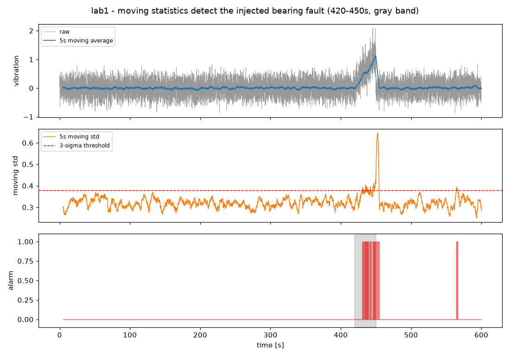
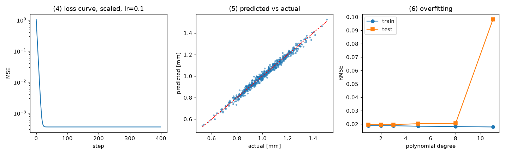
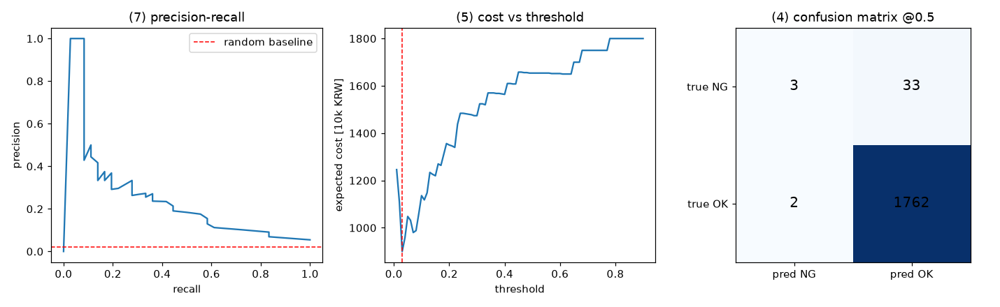
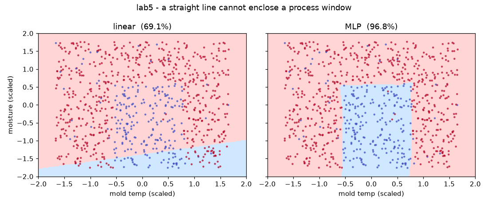

이 페이지의 차례
0이 페이지로 공부하는 법
1부 표의 오른쪽 열("제조에서 왜")을 먼저 보고, 감이 안 오는 줄만 대응 실습으로 확인하면 된다. 전부 읽을 필요는 없다. 시간이 없으면 실습 2와 4만 — 2단계 제조 응용에서 가장 많이 쓰는 둘이다.
- 환경 설치와 점검30분아래 E절. 마지막 줄이 "환경 준비 완료"면 실습 5종이 전부 돈다
- 1부 개념 13개 — 표를 훑고 모르는 줄에 표시2시간각 줄에 한 줄 정의 · 제조에서 왜 · 대응 실습이 있다
- 2부 실습 1 → 5 순서대로4시간1~2가 데이터, 3~4가 모델과 평가, 5가 도구. 명령 한 줄, 실제 출력, 그림, 해 볼 것
- 3부 자가 점검 10문항30분막히는 번호가 곧 1주차에 물어볼 질문이다. 회차 노트의 질문 절에 옮긴다
진행 체크
이 브라우저에만 저장된다(서버 없음).
E환경 설치 (30분) — 개강 당일에 하지 않는다
파이썬은 3.10 ~ 3.12를 권한다. 3.13 이상은 PyTorch 휠이 없을 수 있다. 강의가 구글 코랩을 쓸 수도 있지만, 로컬 환경이 있으면 VOD 복습 때 인터넷 없이 코드를 돌릴 수 있다. 둘 다 준비해 두는 쪽이 낫다.
# 가상환경 + 패키지 (macOS / Linux. Windows는 venv\Scripts\activate) python3.12 -m venv ~/venv/mfgai && source ~/venv/mfgai/bin/activate pip install -U pip numpy pandas matplotlib scikit-learn torch jupyterlab # 실습 코드 받기 git clone https://github.com/drum-grammer/mfg-ai-bootcamp cd mfg-ai-bootcamp/labs # 점검 — 없는 패키지를 찾아 설치 명령까지 찍어 준다 python3 setup_check.py
# 통과하면 이렇게 끝난다 (2026-09-13, macOS arm64, Python 3.12.13) == 2) 패키지 == [O] numpy 2.5.3 배열·선형대수 — 모든 실습의 바닥 [O] pandas 3.0.5 표 형태 설비 로그·센서 데이터 [O] matplotlib 3.11.2 그래프 [O] sklearn 1.9.1 회귀·분류·앙상블·평가지표 [O] torch 2.14.0 딥러닝 (2단계 시계열·이미지 모델) == 3) 연산 장치 == torch가 쓸 장치: mps ← cpu여도 1단계 실습은 전부 가능하다 == 4) 스모크 테스트 == 정답 계수 : [ 2. -1. 0.5] 학습된 계수: [ 1.991 -1.01 0.505] 환경 준비 완료
| 방법 | 준비물 | 어떻게 |
|---|---|---|
| A. 터미널 | 위 가상환경 | python3 lab1_numpy_sensor.py 처럼 한 줄씩. 결과 그림·CSV는 out/에 떨어진다 |
| B. 주피터 (권장) | + jupyterlab | jupyter lab notebooks/ — 같은 이름의 .ipynb. 셀 단위로 중간 변수를 들여다볼 수 있다 |
| C. 구글 코랩 | 브라우저만 | 각 실습의 코랩에서 열기. 코랩에는 numpy·pandas·sklearn·torch가 이미 깔려 있다. 첫 셀이 out/ 폴더를 만든다 |
1.1데이터 — 특징·라벨, 지도·비지도, 표준화, 분할
| 개념 | 한 줄 정의 | 제조에서 왜 중요한가 | 실습 |
|---|---|---|---|
| 특징(feature) / 라벨(label) | 모델에 넣는 입력 열들 / 맞히려는 정답 열 | 라벨은 하늘에서 안 떨어진다. 고장 이력을 센서 표에 붙여 만든다 | 2 |
| 지도 / 비지도 학습 | 정답이 있는가 없는가 | 불량 이력이 없는 설비가 태반이라 비지도 이상탐지를 쓴다 | 1 · 4 |
| 표준화(정규화) | 열마다 평균 0, 표준편차 1로 | 압력 850과 수분율 0.04를 그대로 넣으면 모델이 압력만 본다 | 1 · 3 |
| 훈련/검증/시험 분할 | 학습에 안 쓴 데이터로 채점 | 나눠 놓지 않으면 좋아 보이는 착시가 끝까지 안 깨진다 | 3 |
1.2회귀 — 손실, 경사하강법·학습률, 과적합
| 개념 | 한 줄 정의 | 제조에서 왜 중요한가 | 실습 |
|---|---|---|---|
| 회귀 / 분류 | 숫자를 맞히기 / 범주를 맞히기 | 치수·수율 예측은 회귀, 양·불 판정은 분류 | 3 · 4 |
| 손실함수 | 틀린 정도를 하나의 숫자로 | 회귀는 MSE, 분류는 교차엔트로피. 이 선택이 모델 성격을 정한다 | 3 |
| 경사하강법 · 학습률 | 손실이 줄어드는 방향으로 조금씩 이동 / 그 보폭 | 학습이 안 되는 원인 1순위가 학습률이다 | 3 |
| 과적합 | 훈련 점수는 오르는데 시험 점수가 돌아서는 지점 | 데이터가 적은 제조 문제에서 특히 잘 일어난다 | 3 |
손실 L(w, b) = (1/n) Σ ( x_i·w + b − y_i )² (MSE) 기울기 dL/dw = (2/n) Xᵀ(Xw + b − y) dL/db = (2/n) Σ(Xw + b − y) 갱신 w ← w − lr · dL/dw b ← b − lr · dL/db
선형 모델은 정규방정식으로 한 번에 풀린다(실습 3 (2)). 그런데도 경사하강법을 배우는 이유는 신경망에는 닫힌 해가 없기 때문이다. 달라지는 것은 모델의 모양뿐이고 이 세 줄은 같다.
1.3분류와 평가 — 혼동행렬, 불균형
| 개념 | 한 줄 정의 | 제조에서 왜 중요한가 | 실습 |
|---|---|---|---|
| 혼동행렬 · 정밀도 · 재현율 | 맞힘/틀림 네 칸과 그로부터 나오는 비율 | 미검(FN)과 과검(FP)의 비용이 다르다. 정확도로는 안 보인다 | 4 |
| 불균형 데이터 | 찾아야 할 쪽이 드문 상태 | 불량률 2%면 "전부 양품"이라 찍어도 정확도 98% | 4 |
예측 불량 예측 양품 실제 불량 | TP (잡음) FN = 미검 (불량을 흘려보냄) 실제 양품 | FP = 과검 TN 정밀도 = TP / (TP + FP) 잡은 것 중 진짜 불량 비율 → 과검이 적을수록 높다 재현율 = TP / (TP + FN) 진짜 불량 중 잡아낸 비율 → 미검이 적을수록 높다
임계값 0.5는 관습일 뿐이다. 미검 1건 50만원, 과검 1건 2만원이면 총비용이 최소인 임계값은 0.03까지 내려간다 (실습 4 (5)). 현업과 합의할 것은 모델이 아니라 이 비용표다.
1.4신경망 — 텐서·autograd, 에폭·배치, 은닉층·활성함수
| 개념 | 한 줄 정의 | 제조에서 왜 중요한가 | 실습 |
|---|---|---|---|
| 텐서 · autograd | 배열 + 미분 기록 / 미분 자동 계산 | 손으로 미분할 수 없는 모델을 학습시키는 장치 | 5 |
| 에폭 · 배치 | 데이터 한 바퀴 / 한 번에 처리하는 묶음 | 둘을 헷갈리면 학습 시간 계산이 어긋난다 | 5 |
| 은닉층 · 활성함수 | 층을 쌓고 사이에 비선형을 끼운다 | "너무 낮아도 불량, 너무 높아도 불량"은 직선으로 못 가른다 | 5 |
opt.zero_grad() # 지난 기울기를 지운다 (빼먹으면 누적된다) pred = model(x) # 순전파 loss = lossf(pred, y) # 손실 loss.backward() # 역전파 = 기울기 계산 opt.step() # 파라미터 갱신
backward()가 내놓는 기울기는 실습 3에서 손으로 적은 식과 같은 값이다 (실습 5 (2), 최대 차이 1e-6). 강의 코드가 빨라지면 모르는 줄이 (a) 데이터 준비 (b) 모델 정의 (c) 이 다섯 줄 중 어디인지부터 분류한다.
NumPy — 센서 3채널, 이동통계로 베어링 고장 잡기
out/lab1_sensor.pngpython3 lab1_numpy_sensor.py
상황: 1초에 10번 샘플링하는 설비 센서 3채널(진동·온도·전류) 10분치. 7분 지점부터 30초간 베어링 이상 — 진동이 커지고 전류가 따라 오른다. C 펌웨어에서 for 루프로 하던 일(영점 빼기, 이동평균, 임계값 넘는 구간 찾기)이 NumPy에서는 전부 한 줄이 된다.
| 구획 | 실제 출력 (2026-09-13) | 읽는 법 |
|---|---|---|
| (1) shape | X.shape = (6000, 3) — 행 = 시점, 열 = 채널 | 모든 실습에서 shape부터 본다 |
| (2) 벡터화 | 같은 RMS: for 루프 0.44 ms vs NumPy 0.02 ms, 18배 | 데이터가 100배 커지면 이 차이가 대기 시간이 된다 |
| (3) 브로드캐스팅 | (6000,3) − (3,)이 계산된다. 표준화 후 평균 0, 표준편차 1 | 채널별 보정을 한 번에 |
| (4) 슬라이딩 윈도우 | 5초 창 → (5951, 50), 원본 메모리 재사용 True | 이동평균·이동표준편차 = 2단계 시계열 특징의 원형 |
| (5) 3-시그마 경보 | 정상 구간 이동표준편차 평균 0.3180, 임계값 0.3785. 경보 구간 14개 — 고장 구간 안 13개 / 오경보 1개 | 검출이 늦고(창을 채울 때까지), 오경보가 섞인다(정상도 가끔 넘는다). "3초 이상 지속" 같은 규칙이 늘 따라붙는다 |
| (6) axis | mean(axis=0) → (3,) 채널별 / mean(axis=1) → (6000,) 시점별 | axis는 "없어지는 축"이다 |

W를 5초에서 1초·20초로 바꿔 "지연 vs 안정성"이 어떻게 움직이는지. 3-시그마를 2-시그마로 낮추면 오경보가 몇 개로 느는지. 고장 구간을 30초에서 5초로 줄이면 5초 창이 잡아내는지.Pandas — 설비 로그를 "모델에 넣을 표"로
out/dataset_hourly.csvpython3 lab2_pandas_equipment_log.py
왜 이 실습이 제일 중요한가: 강의는 모델에 시간을 쓰지만, 실제 과제에서 시간을 먹는 곳은 여기다. 설비 3대 × 7일 × 1분 간격의 지저분한 CSV(통신 끊김, 센서 오류 코드 −999, 설비마다 다른 기록 시작)와 고장 이력 표를 붙여 라벨이 달린 표 하나를 만든다.
| 단계 | 실제 출력 (2026-09-13) | 읽는 법 |
|---|---|---|
| (1) 읽자마자 describe() | temp의 min이 −999. 30,240행 | 센서 고장 코드가 숫자로 섞여 들어왔다. 평균을 그대로 믿으면 안 된다 |
| (2) 결측 두 종류 | temp 224 / vib 165 / current 165개. limit=5(5분까지만) 메운 뒤 남은 결측 315개 | 통신 끊김(수십 분)은 지어내지 않고 남긴다. 오류 코드(한두 점)는 앞뒤로 메운다. 설비별 groupby 없이 ffill하면 다른 설비 값이 넘어온다 |
| (3) resample 1분 → 1시간 | 30,240행 → 504행. 평균·최댓값·표준편차·개수 | 집계 함수 선택이 곧 특징 설계다: 평균은 추세, 최댓값은 피크, 표준편차는 흔들림 |
| (4) merge로 라벨 | "앞으로 6시간 안에 고장?" 라벨 분포 {0: 486, 1: 18}, 양성 3.57% | 지도학습의 y가 여기서 생긴다. 고장 이후 구간을 넣으면 누수(leakage) |
| (5) rolling 특징 | label=1 구간 vib 기울기 +0.0148 vs label=0 −0.0006, temp 기울기 +0.6332 vs −0.0302 | 전조는 절댓값보다 기울기에서 먼저 보인다 |
| (6) 완성된 표 | 498행 × 특징 9개 + 라벨 1개 | 여기까지가 "X와 y를 만든다"의 실제 내용. 실습 3~5가 이 표 모양을 받는다 |
limit=5를 60으로 올려 통신 끊김까지 메우면 라벨 1 구간의 특징이 어떻게 흐려지는지. 설비별 groupby를 빼고 ffill하면 무슨 일이 생기는지.회귀를 손으로 — 사출성형 공정 → 제품 치수
out/lab3_regression.pngpython3 lab3_regression_from_scratch.py
상황: 사출압력(~850 bar)·금형온도(~45 ℃)·냉각시간(~12 s)·원료 수분율(~0.04 %)로 완성품 치수 편차(mm)를 예측한다. 단위가 제각각이라 크기 차이가 2만 배 — 그것이 이 실습의 핵심이다.
| 구획 | 실제 출력 (2026-09-13) | 읽는 법 |
|---|---|---|
| (2) 정규방정식 | 계수 [0.0020, −0.0146, −0.0394, 2.8826], MSE 0.000361 (잡음 분산 0.0004) | 선형 모델은 한 번에 풀린다. 더 줄일 수 없는 바닥 |
| (3) 원 스케일, 학습률만 | lr=1e-9 → 0.340 (느림) · lr=1e-7 → 0.013 (느림) · lr=1e-5 → inf (발산) | 되는 학습률의 창이 바늘구멍이다 |
| (4) 표준화 뒤 | lr=1e-3 → 0.213 · lr=1e-2 → 0.000361 · lr=1e-1 → 0.000361 | 같은 400스텝에 정규방정식과 같은 답. 계수를 원 단위로 되돌리면 (2)와 일치 |
| (5) sklearn 대조 | 최대 차이 4.4e-16 | 라이브러리가 하는 일을 이제 안다 |
| (6) 과적합 | 차수 1/2/3/5/8/11 → test RMSE 0.0196 / 0.0195 / 0.0196 / 0.0202 / 0.0205 / 0.0981. train은 0.0188 → 0.0178로 계속 감소 | test 기준 최적은 2차. 이 갈라짐이 과적합 |

불량 판정은 정확도로 평가하지 않는다 — 불량률 2%
out/lab4_classification.pngpython3 lab4_classification_imbalanced.py
상황: 공정 파라미터 5개로 로트의 불량을 판정한다. 6,000건 중 불량 136건(2.27%). 품질관리·이상탐지·예지보전은 전부 이 모양이다 — 찾아야 할 것이 드물다.
| 구획 | 실제 출력 (2026-09-13) | 읽는 법 |
|---|---|---|
| (2) 로지스틱 회귀 직접 구현 | 계수: 수분율 +1.446, 사이클편차 +1.054, 금형온도 −0.752 … sklearn과 소수 셋째 자리까지 일치 | 표준화한 계수라 크기 비교가 그대로 영향력 비교 |
| (3) 정확도의 함정 | 전부 "양품" 모델 98.00% (검출 0건) vs 학습한 모델 98.06% (검출 3건) | 정확도로는 둘을 구분할 수 없다. 보고서에 쓰면 안 된다 |
| (4) 혼동행렬 @0.5 | TP 3 · FN 33 · FP 2 · TN 1762. 정밀도 0.600, 재현율 0.083, F1 0.146 | 미검(FN) 33건. 잡은 것은 정확하지만 거의 못 잡는다 |
| (5) 비용으로 임계값 | 미검 50만원·과검 2만원: 임계값 0.50 → 비용 1,654만원 / 최적 0.03 → 900만원 (재현율 0.833, 정밀도 0.091) | 미검이 비쌀수록 임계값을 낮춰 많이 잡는다. 0.5는 어디에도 근거가 없다 |
| (6) class_weight | 가중치 1/5/20/50 → 재현율 0.083 / 0.361 / 0.583 / 0.861, 정밀도 0.600 → 0.073 | 임계값 조정과 결국 같은 손잡이 |
| (7) 요약 지표 | ROC-AUC 0.914 vs PR-AUC 0.265 (무작위 기준선 0.020의 13배) | 불균형에서 ROC는 후하게 나온다. PR을 같이 본다 |

COST_FN을 50만원에서 5만원으로 낮추면 최적 임계값이 어디로 가는지(과검이 상대적으로 비싸진다). 불량률을 2%에서 20%로 올리면 ROC-AUC와 PR-AUC의 간격이 어떻게 줄어드는지. class_weight 5와 임계값 0.15 중 어느 쪽이 같은 재현율에서 정밀도가 높은지.PyTorch — 실습 3·4에서 손으로 하던 것을 그대로 옮긴다
out/lab5_boundary.pngpython3 lab5_pytorch_basics.py
왜 PyTorch인가: 실습 3에서 미분을 손으로 적었다. 모델이 조금만 복잡해져도 그 미분을 손으로 못 적는다. PyTorch는 "계산을 기록해 두었다가 미분을 대신 해 주는" 도구다. 그게 전부다.
| 구획 | 실제 출력 (2026-09-13) | 읽는 법 |
|---|---|---|
| (1) 텐서 | ndarray (2,3) float64 ↔ tensor (2,3) float32. a.mean(axis=0) = t.mean(dim=0) | 주의 둘: NumPy는 axis, torch는 dim / 기본 dtype이 다르다 |
| (2) autograd vs 손계산 | dL/dw 손계산 [−3.24631, 4.28557, −1.21452] = autograd, 최대 차이 1.19e-6 | 같은 것을 자동으로 해 줄 뿐이다 |
| (3) 다섯 줄 관용구 | step 0 loss 10.17 → step 99 0.00279. 학습된 계수 [1.5, −2.0, 0.697], 정답 [1.5, −2.0, 0.7] | 이 다섯 줄이 부트캠프 내내 반복된다 |
| (4) DataLoader | 배치 32 × 30에폭 → 같은 답. 한 에폭 = 7번의 갱신 (200건 / 32) | 미니배치는 메모리를 위한 것이지 정확도를 위한 것이 아니다. 에폭 수 ≠ 갱신 횟수 |
| (5) 공정 창 문제 | 선형 모델 69.1% vs 은닉층 2개 MLP 96.8% (오라벨 3% 포함) | "너무 낮아도 불량, 너무 높아도 불량"은 직선 하나로 못 가른다. 딥러닝이 제조에서 쓰이는 이유의 8할 |
| (6) 저장·불러오기 | state_dict 4.3 KB, 다시 불러와 같은 출력 True | 저장되는 것은 가중치뿐. 모델 구조 코드는 따로 있어야 한다 — 미니 프로젝트 제출 때 자주 놓친다 |

opt.zero_grad() 줄을 지우고 (3)을 돌려 loss가 어떻게 되는지. 은닉층 폭을 16에서 2로 줄이면 공정 창을 둘러싸는지. 오라벨 비율 3%를 15%로 올리면 MLP 정확도가 어디까지 내려가는지 — 100%가 나오면 오히려 의심할 것.2.6실습 ↔ 개념 지도
| 실습 | 핵심 | 끝나면 알게 되는 것 | 2단계에서 |
|---|---|---|---|
0 setup_check.py | 환경 | 파이썬 버전·패키지·연산 장치, 작은 학습 루프가 실제로 도는지 | — |
1 lab1_numpy_sensor.py | NumPy | shape·브로드캐스팅·axis·마스킹. 이동통계로 고장을 잡고 오경보가 왜 섞이는지 | 시계열 창 특징, 이상탐지 기준선 |
2 lab2_pandas_equipment_log.py | Pandas | 지저분한 CSV → 모델에 넣을 표. 결측 두 종류, 리샘플링, merge로 라벨, rolling | 예지보전 데이터셋 만들기 6단계 |
3 lab3_regression_from_scratch.py | 회귀 | 손실·기울기·갱신을 손으로. 학습률을 터뜨려 보고, 스케일링을 실측하고, 과적합을 만든다 | 잔여수명 회귀, 모든 신경망 학습의 뼈대 |
4 lab4_classification_imbalanced.py | 분류 | 정확도 98%짜리 바보 모델. 혼동행렬·정밀도·재현율, 비용표로 임계값, class_weight, PR | 품질관리·이상탐지 평가 전부 |
5 lab5_pytorch_basics.py | PyTorch | backward()가 손계산과 같음을 확인. 다섯 줄 관용구, DataLoader, 선형 vs MLP, state_dict | CNN·오토인코더·시계열 모델 — 모델 정의만 바뀐다 |
3.1자가 점검 10문항
실습을 다 돌린 뒤 답할 수 있어야 하는 것. 막히는 번호가 곧 1주차에 물어볼 질문이다.
X.mean(axis=0)과X.mean(axis=1)은 각각 무엇을 남기는가- 통신 끊김으로 40분 비어 있는 구간과, 센서 오류 코드로 한 점 비어 있는 구간을 왜 다르게 처리하는가
- 표준화를 하면 학습률의 허용 범위가 왜 넓어지는가
- 정규방정식으로 한 번에 풀 수 있는데 왜 경사하강법을 배우는가
- 다항 차수를 올릴 때 훈련 RMSE와 시험 RMSE는 각각 어떻게 움직이는가
- 불량률 2%에서 정확도 98%를 보고했을 때 무엇을 숨기고 있는가
- 미검 비용이 과검 비용의 25배라면 임계값을 0.5보다 올려야 하나 내려야 하나
opt.zero_grad()를 빼먹으면 무슨 일이 생기는가- 에폭 30, 배치 32, 데이터 200건이면 파라미터는 몇 번 갱신되는가
- 금형온도가 너무 낮아도 높아도 불량일 때, 로지스틱 회귀 하나로 왜 안 되는가
axis=0은 시간축(행)을 없애 채널별 평균 (3,),axis=1은 채널축(열)을 없애 시점별 평균 (6000,). axis는 "없어지는 축"이다. (실습 1 (6))- 긴 끊김은 값을 지어내면 40분치 가짜 데이터가 된다 — 구간째 빼거나 "결측이었음" 플래그를 남긴다. 한두 점의 오류 코드는 앞뒤로 보간하는 것이 합리적이다(
interpolate(limit=5)). 어느 쪽이든 설비별로 따로 처리한다. (실습 2 (2)) - 원 스케일에서는 수분율(0.04) 방향은 큰 보폭이, 압력(850) 방향은 작은 보폭이 필요해 하나의 학습률로 둘을 만족시키기 어렵다(1e-5는 발산, 1e-7은 느림). 표준화하면 모든 방향의 크기가 같아져 1e-2~1e-1이 다 된다. (실습 3 (3)(4))
- 정규방정식은 선형 모델에만 있다. 신경망에는 닫힌 해가 없어서 손실 → 기울기 → 갱신의 반복밖에 쓸 수 없다. (실습 3 (2))
- 훈련 RMSE는 계속 내려간다(0.0188 → 0.0178). 시험 RMSE는 2차에서 최소(0.0195)였다가 11차에서 0.098로 튄다. 이 갈라짐이 과적합이다. (실습 3 (6))
- 재현율과 혼동행렬. 전부 "양품"이라 찍는 모델도 98%이고 불량 검출은 0건이다 — 정확도는 미검(FN) 33건을 숨긴다. (실습 4 (3)(4))
- 내려야 한다. 미검이 비쌀수록 많이 잡아야 하므로 임계값을 낮춘다. 실습 4에서는 0.5 → 0.03으로 내려 비용이 1,654만원에서 900만원으로 줄었다. (실습 4 (5))
- 기울기가 지워지지 않고 누적된다. 매 스텝 이전 기울기가 더해져 갱신이 점점 커지고 학습이 틀어진다. (실습 5 (3))
- 한 에폭 = ⌈200 / 32⌉ = 7번 갱신, 30에폭이면 210번. 에폭 수와 갱신 횟수를 헷갈리지 말 것. (실습 5 (4))
- 로지스틱 회귀의 결정 경계는 직선(초평면) 하나다. "낮아도 불량, 높아도 불량"은 양쪽을 가르는 경계 둘이 필요해서 직선 하나로는 69.1%에 그친다. 은닉층을 끼우면(MLP) 공정 창을 둘러싸 96.8%. (실습 5 (5))
3.2개강 당일 체크 · 첫 회차에 확인할 것
3.3회차 노트 (개강 후)
회차 1~8의 노트가 쌓이면 여기에 회차별로 붙는다 — 핵심 개념 3~5개, 실습 기록, 퀴즈 대비, 질문. 강의에서 다룬 개념이 위 표에 없으면 표에 줄을 더한다.